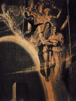

Вани, в скандинавської міфології невелика група богів родючості. Жили вони в Ванахейм, далеко від Асгарда, обителі богів-асів. Вани володіли даром передбачення, пророцтва, а також володіли мистецтвом чаклунства. Крім цього, їм приписувалися кровозмісні зв'язку між рідними братами і сестрами. До ванам відносили Ньерда і його потомство - Фрейра і Фрей.
У стародавніх легендах розповідалося про війну, яка поклала кінець золотого віку. Приводом до першої війни послужила вчинок злої чаклунки Хейді, яка прийшла в поселення асів, які забили чаклунку списами і намагалися тричі спалити її на вогнищі, але лиходійка знову воскресала з попелу.
Початок війни було покладено ватажком асів Одіном, який метнув списа в напрямку ванів. Боги родючості пішли в наступ на небесне селище асів, але аси виявилися сильнішими, і боротьба закінчилася обміном заручниками. Війну асів і ванів можна інтерпретувати як боротьбу за священний мед, який втілював в собі якийсь космічний принцип усвідомлення життя. За переказами, вани вважалися хранителями священного меду.
Вани послали в Асгард бога моря Ньерда і його дітей, близнюків Фрейра і Фрей, а разом з ними квасір, мудрого чоловічка, створеного з слини богів, які в знак примирення між асами і ванами плювали в глечик.
Аси теж відправили в Ванахейм заручників: Хенір, брата бога Одіна, який дарував першим людям почуття, і мудрого Міміра. Спочатку Хенір і Мімір були радо прийняті ванами, але незабаром ті прийшли до висновку, що на обміні з асами вони програли. Нерішучий Хенір не міг і слова сказати, якщо поруч не було Міміра. Вани вирішили, що Мімір є не тільки голосом Хенір, але і його умом.Разгневанние, вони відрубали Міміру голову і відіслали її асам. Один забальзамували голову нещасного, потім прочитав над нею заклинання, яке повертає дар мови.
Згодом Один доручив голові Міміра стерегти чарівне джерело під корінням світового древа Иггдрасиль. Бажаючи отримати частину знань Міміра, Один віддав йому одне око за дозвіл попити з джерела мудрості. Перед останньою битвою богів і чудовиськ, Рагнарек, Один повинен піти до джерела і там випросити ради у голови Міміра. На ілюстрації Франца фон Штассена за Одіном і Фрігге по мосту Біврест слідують заручники-близнюки, а замикають процесію Тор і Локі.